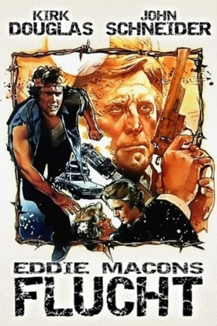
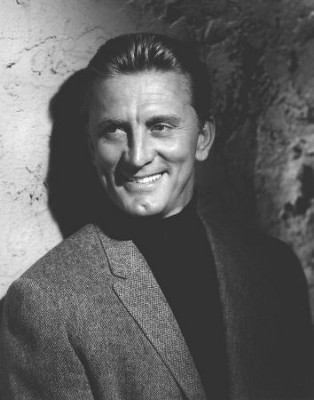
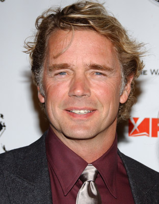
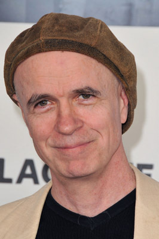
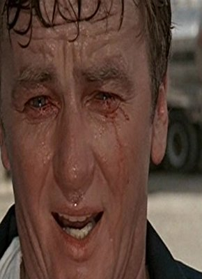
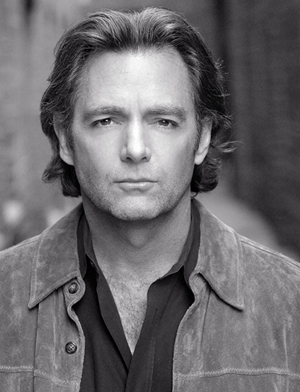
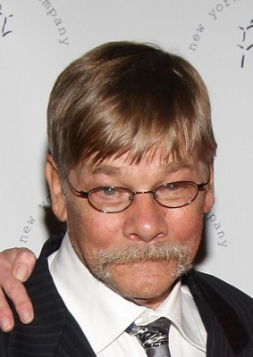

#8950 Eddie Macons Flucht
Alternativ: Eddie Macon's Run
 
 IMDB-Wertung: 5.6 / 10
IMDB-Wertung: 5.6 / 10  Metascore: 0
Metascore: 0 
Für Eddie Macon (John Schneider) bricht eine Welt zusammen: Er sitzt unschuldig in einem Gefängnis in Texas. Sein einziger Wunsch ist es, seine Frau und seinen kleinen Sohn wiederzusehen. Obwohl er weiß, daß ein Fluchtversuch ihn lebenslänglich hinter Gitter bringt, riskiert er den Ausbrauch. An seine Fersen heftet sich Carl Mazack (Kirk Douglas), der beweisen will, daß er trotz seines Alters noch immer ein fähiger Polizist ist.
Jahr: 1983
Dauer: 94 Minuten
FSK: 16
Land: USA Studio: Universal PicturesTonspuren:
Untertitel: Deutsch,
Auflösung: 1080p (1920x1040) Größe: 6707 MB
Genre: Action, Thriller, Drama, Abenteuer, Krimi
Regisseur: Jeff Kanew
Drehbuch: James McLendon
Soundtrack: Norton Buffalo
Darsteller:
-  Kirk Douglas als Carl 'Buster' Marzack
-  John Schneider als Eddie Macon
- Lee Purcell als Jilly Buck
- Lisa Dunsheath als Kay Potts
- Leah Ayres als Chris
-  Tom Noonan als Daryl Potts
-  J.C. Quinn als Shorter
- Jay O. Sanders als Rudy Potts
-  Todd Allen als Desk Sergeant
- Nesbitt Blaisdell als Sheriff Nighblack
-  Matthew Cowles als Ray Banes
- Vic Polizos als Desk Clerk
- Dann Florek als Man in Bar
 J.T. Walsh als Man in Bar
J.T. Walsh als Man in Bar John Goodman als Hebert
John Goodman als Hebert- Lou Hancock als Woman
- Ron Jackson als Police Partner
- Matthew Kimbrough als Charlie
 Mark Margolis als 5:00 Bar Owner
Mark Margolis als 5:00 Bar Owner- Harry S. Murphy als Cop Who Stops Eddie
- Gil Rogers als Logan
- Susan Bongard als Newscaster
- Bill DeWeese als Officer #12
- Buddy Gilbert als Tucker
- Jim Gough als Judge
- Fernando E. Gutiérrez als Mexican Musician
- Javier A. Gutiérrez als Mexican Musician
- Nik Hagler als Partner
- Lloyd David Hart als Bartender
- Billy Lynch als Rodeo Announcer
- Jerry McKnight als Billy Bob (truck driver)
- John L. Martin als Homer Bishop
- Matthew Meece als Bobby
- Ricardo Montemayor als Patrolman #37
- Donald B. Nunley als Doctor
- Cynthia Piton als Housekeeper
- Gilbert Rendon als Laredo Police Chief
- Brick Tripp als Sgt. Red
- Woody Watson als Earl Barnes
Datei: X:\1983\Eddie Macons Flucht (1983, FSK16, 1920x1040).mkv seit 16.05.2018
Festplatte: HD 1980-1986
 Es gibt insgesamt 35 Filme in der Gruppe '1983'
Es gibt insgesamt 35 Filme in der Gruppe '1983'